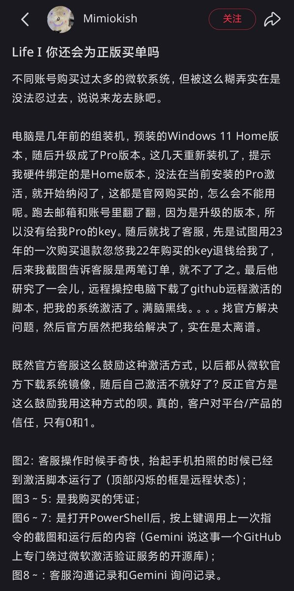
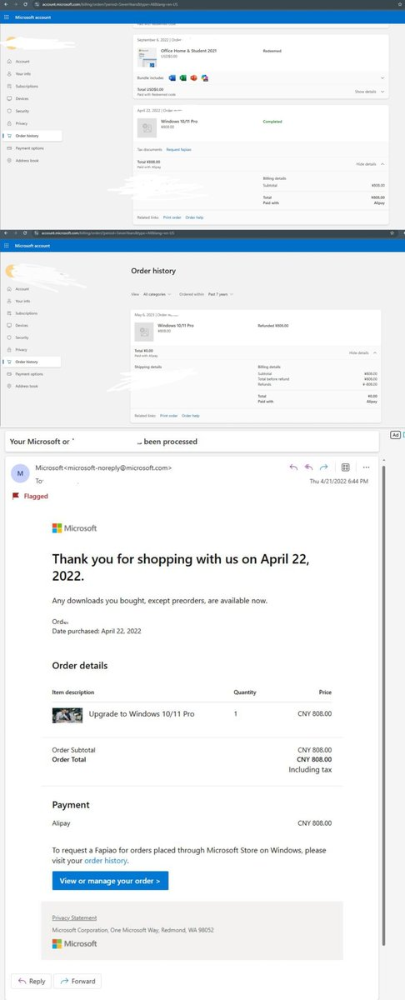
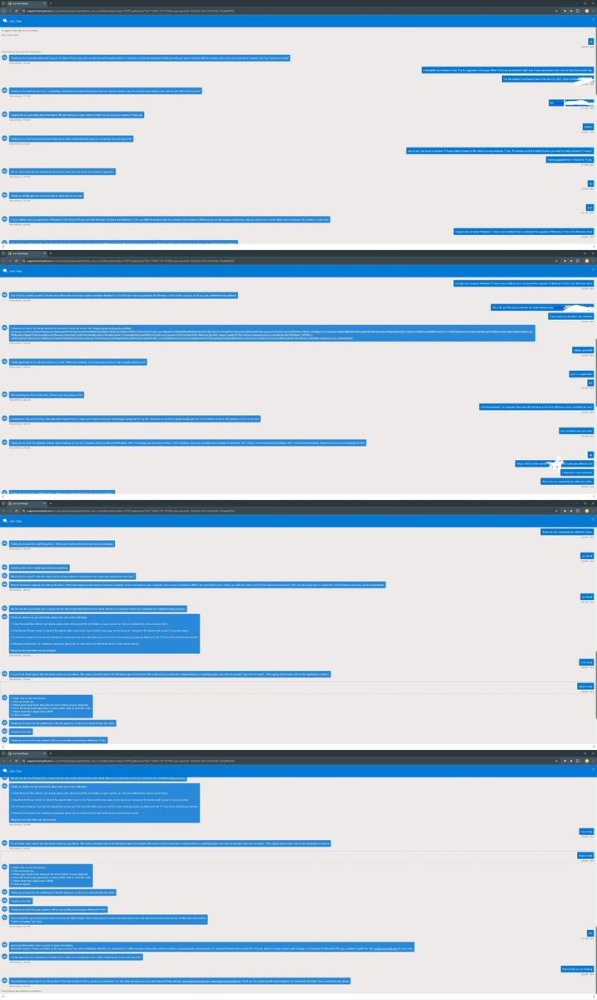
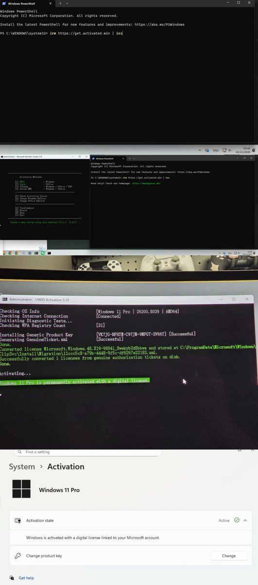

你还会为正版Windows Pro买单吗？xhs用户Mimiokish抱怨微软官方客服使用MAS脚本激活其购买的Pro许可。
由于他之前买的组装机预装家庭中文版，并自费808元升级专业版（Pro）系统，重新装机却提示硬件绑定Home版本，无法Pro版本。因为是升级至专业版，官网并没有提供激活码，只能寻求客服帮助。
最后客服直接用MAS脚本激活了他的Pro系统，看来「正版」和「盗版」的区别不在于软件，而是取决于交没交钱。毕竟正版是法律问题，激活是技术问题，所以从法律上讲你是正版，所以没有问题，就是微软客服也用这玩意🤣🤣🤣
由于他之前买的组装机预装家庭中文版，并自费808元升级专业版（Pro）系统，重新装机却提示硬件绑定Home版本，无法Pro版本。因为是升级至专业版，官网并没有提供激活码，只能寻求客服帮助。
最后客服直接用MAS脚本激活了他的Pro系统，看来「正版」和「盗版」的区别不在于软件，而是取决于交没交钱。毕竟正版是法律问题，激活是技术问题，所以从法律上讲你是正版，所以没有问题，就是微软客服也用这玩意🤣🤣🤣



